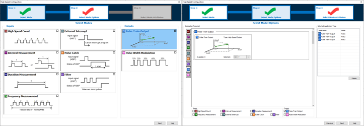
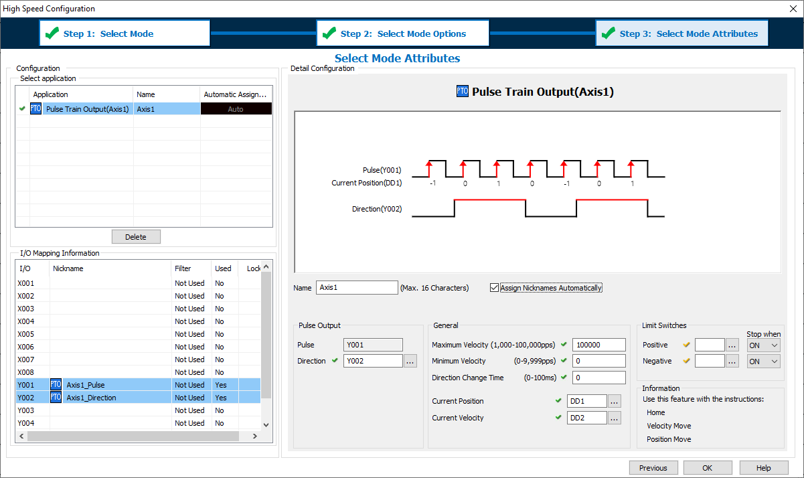

|
|
|
Topic: CL292 |
Pulse Train Output |
|
|
Pulse Train Output (Pulse and Direction) is used by stepper or servo motor drives for motion control. The High Speed I/O Configuration for CLICK PLUS CPUs automatically assigns Inputs and Outputs. This provides the maximum amount of flexibility to the available High-Speed capable Inputs and Outputs. Certain combinations of features are not possible.
Step 1 of the High Speed Configuration the option of PTO can be selected.
Step 2 the number of needed PTO Axis is selected.
Step 3 the Axis settings are configured.

|
|
Note: CLICK PLUS digital Inputs and Outputs can only be configured as High Speed when the Option Slot I/O Module is installed in Slot 0 of the CPU (the leftmost slot when facing the CPU). |
|
PTO can only be used with these DC Output modules in Slot0.
| Pulse Train Outputs | |
| Module | Number of supported PT Outputs |
| C2-14x | up to 3 |
| C2-08x | up to 2 |
The pin assignment for each High Speed Pulse Output is fixed and cannot be changed. The Direction Output can be assigned to any Output pin (Slot or Expansion Modules.) The PTO output mode is always Pulse and Direction, other modes of operation are not supported.
| Pulse Output Pin Assignments | |
| Pulse Output | Assignment |
| Y001 | Axis1_Pulse |
| Y003 | Axis2_Pulse |
| Y005 | Axis3_Pulse |

1 Name: This text is used to Prefix Nicknames of addresses used by this configuration.
2 Assign Nicknames automatically: Nicknames can be assigned to each address automatically. If you want to manage the Nicknames manually then disable this feature.
Axis1_Pulse (the Highspeed Output Bit: Y001, Y003, Y005)
Axis1_Direction (any Output Bit: Y001-Y816)
Axis1_CurrentPosition (any DDx register)
Axis1_CurrentVelocity (any DDx register)
3 Pulse: The system will automatically assign the Axis to a High Speed Output.
4 Direction: The Direction Output is ON while the Axis is moving in the Positive Direction, and OFF when moving in the Negative Direction. The selected address can be assigned to any Output pin (Slot or Expansion Modules.)
5 Maximum Velocity: This setting limits the highest allowable commanded velocity of the Axis. If a velocity is commanded above this value, the Axis will adjust the velocity down to this setting (Pulses Per Second).
6 Minimum Velocity: This setting defines the lowest allowable velocity. If a velocity is commanded below this value, the Axis will adjust the velocity up to this setting. This setting can be used to avoid low frequency harmonics, or to increase Acceleration/Deceleration times since the region between Zero and Minimum Velocity will be skipped (Pulses Per Second).
7 Direction Change Time: This setting allows a time delay when the Axis needs to change direction. During this dwell time there will be no Pulse Output.
8 Current Position: This register must be of type DD and contains the value of the Axis Position (-2,147,483,648 to +2,147,483,647). This position value can rollover and rollunder.
9 Current Velocity: This register must be of type DD and contains the value of the Axis Velocity (-100,000 to +100,000).
10 Limit Switches: The Axis can be assigned hardware Limit Switches to stop motion in each direction of travel. When one of these is activated, the current instruction will fault, and an Error Code 103 will occur. While activated the Axis can still be commanded in the opposite direction of travel. Limit Switch Inputs can be shared with the Home Instruction for Mode 1(Switch 2) and Mode 2 (Switch 1).
11 Positive: The Positive Limit Switch Input can be assigned to any Input pin (Slot or Expansion Modules.) Limit Switch Input assignments cannot be shared between Axes.
12 Negative: The Negative Limit Switch Input can be assigned to any Input pin (Slot or Expansion Modules.) Limit Switch Input assignments cannot be shared between Axes.
Three ladder instructions are available to control the Axis:
| High Speed Axis Instructions | |
| Instructions | Descriptions |
| Home | Six modes of operation and is used for origin search, set current position, and registration types of moves. |
| Velocity Move | Used to continuously control the Axis by the Target Velocity. |
| Position Move | Used to move the Axis from the Current Position to a new Target Position. |
|
|
Caution: During the time of a Project Transfer using Runtime Edit the motion instructions will immediately stop. When the transfer is completed, the motion can return to operation automatically. |
|
If the output address of the PTO Configuration is duplicated by a ladder Output instruction, a Syntax Check Warning will be generated.
|
|
Note: The System Bits SC150-SC152 “_PTO_AxisX_Ready_Flag” provide status information. |
|
The High Speed Input and High Speed Output features consume the same shared internal resources of the CPU. As features are added into the High Speed Configuration these resources are calculated and the number of available assignments is updated. The following table displays the maximum available Input features as a function of assigned Output features. Not all combinations of features or pin usage are possible.
| Maximum Available High Speed Input Features | |||||||
| C2-14x (8-In/6-Out Module) | C2-8x (4-In/4-Out Module) | ||||||
| PTO or PWM Outputs | 0 Axis | 1 Axis | 2 Axis | 3 Axis | 0 Axis | 1 Axis | 2 Axis |
| Up To # of High Speed Input Features | |||||||
| High Speed Count Up | 6 | 6 | 4 | 1 | 4 | 4 | 2 |
| High Speed Count Down | 6 | 6 | 4 | 1 | 4 | 4 | 2 |
| High Speed Count Up/Down | 3 | 3 | 2 | 0 | 2 | 2 | 1 |
| High Speed Count Pulse/Direction | 4 | 4 | 4 | 1 | 2 | 2 | 2 |
| High Speed Count Quad (AB) | 4 | 4 | 3 | 1 | 2 | 2 | 2 |
| High Speed Count Quad (ABZ) | 2 | 2 | 2 | 1 | 1 | 1 | 1 |
| Interval Measurement Single | 6 | 6 | 4 | 1 | 4 | 4 | 2 |
| Interval Measurement Dual | 3 | 3 | 2 | 0 | 2 | 2 | 1 |
| Duration Measurement | 6 | 6 | 4 | 1 | 4 | 4 | 2 |
| Frequency Measurement Single | 6 | 6 | 4 | 1 | 4 | 4 | 2 |
| Frequency Measurement Quadrature | 4 | 4 | 3 | 1 | 2 | 2 | 2 |
| External Interrupt | 8 | 8 | 8 | 8 | 4 | 4 | 4 |
| Pulse Catch | 8 | 8 | 8 | 8 | 4 | 4 | 4 |
| Filter | 8 | 8 | 8 | 8 | 4 | 4 | 4 |
PTO Error Codes
Home for PTO Axis
Velocity Move for PTO Axis
Position Move for PTO Axis
Pulse Width Modulation